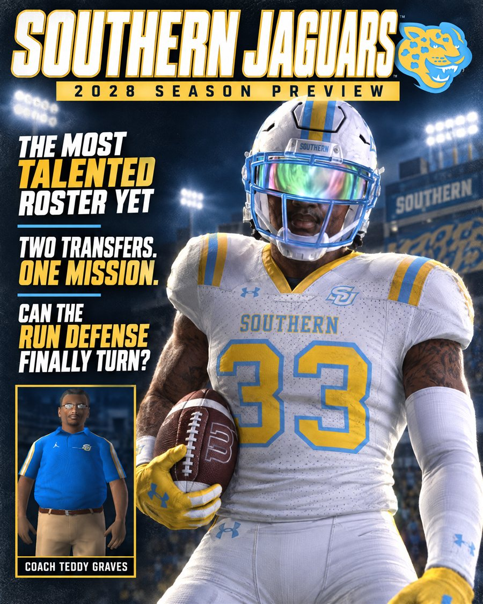
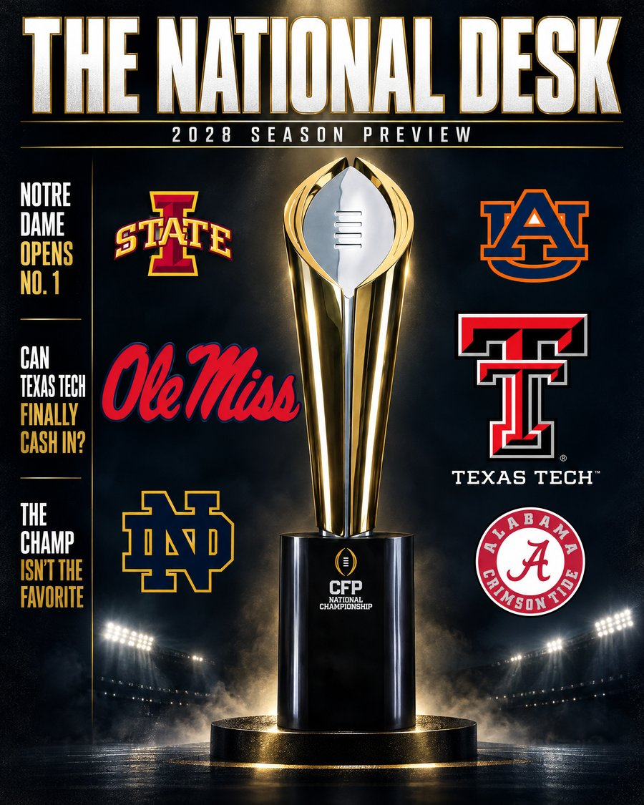

New here? Here's how to follow along. Pick a path below — Local Reports follows the Southern Jaguars season itself, the National Desk covers the sport at large. Both hubs work the same way once you're inside: gold-edged cards are closed-out seasons, fully spoiled and safe to binge; blue cards track the current season in step with the channel, updated episode by episode as it actually releases.

Now Out
Week 7: at No. 10 Texas
The Week 7 episode just went live on the channel — the first-ever meeting between these two programs. The season check-in stays spoiler-free at Week 6 until the Week 8 episode drops — watch it first, no result here yet.

Local Reports
Southern Jaguars
The coach, the roster, the transfer portal, and a season told episode by episode — 4-2 through Week 6, with the Week 7 episode just out.
Enter Local Reports
National Desk
The Sport At Large
Two top-5 upsets through Week 6, a wide-open CFP race, and the weekly check-in that keeps the whole Top 25 in view.
Enter National Desk